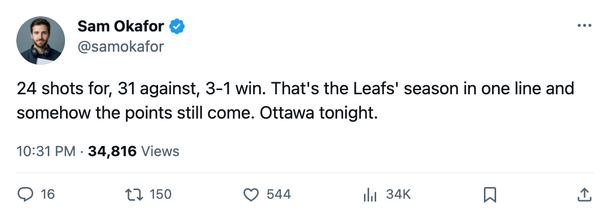

Leafs 3, Panthers 1: 31 shots against, 28-7 at home, and Ottawa tonight
Belfour stops 30. Four Leafs skaters sit on the Bureau's Index risers. 15 days to what the calendar has as the trade deadline.
 Sam OkaforLeafs beat reporter · Queen City Telegram
Sam OkaforLeafs beat reporter · Queen City Telegram
Toronto beat Florida 3-1 Thursday night at the Air Canada Centre.  Ed Belfour93 faced 31 shots on a night his own club fired 24 at the other end. The
Ed Belfour93 faced 31 shots on a night his own club fired 24 at the other end. The  Panthers managed one goal on 31 chances.
Panthers managed one goal on 31 chances.
Toronto sits at 45-12-4, 104 points, a home record of 28-7. The 315 goals for and 163 against on the season carry Toronto first in the Northeast and first in the East.
 Gary Roberts87 carries a 2005-03-05 return date. He has 22 goals, 46 assists and 68 points in 66 games at 19.3 minutes a night, skating the first power play unit and the top two forward lines when in the lineup.
Gary Roberts87 carries a 2005-03-05 return date. He has 22 goals, 46 assists and 68 points in 66 games at 19.3 minutes a night, skating the first power play unit and the top two forward lines when in the lineup.
Toronto visits  Ottawa tonight. Three meetings this season produced 2 wins, 1 loss and 11-11 goals from the
Ottawa tonight. Three meetings this season produced 2 wins, 1 loss and 11-11 goals from the  Leafs' side. The Senators are 22-30-9, on a 2-game losing streak, and without
Leafs' side. The Senators are 22-30-9, on a 2-game losing streak, and without  Marian Hossa85 (back, out to 2005-03-29) and
Marian Hossa85 (back, out to 2005-03-29) and  Todd White81 (hand, out to 2005-03-29).
Todd White81 (hand, out to 2005-03-29).
Five games, four on the road
The next five start tonight and run through 2005-03-13: Ottawa,  Buffalo,
Buffalo,  Vancouver at home on 2005-03-08, then
Vancouver at home on 2005-03-08, then  Edmonton and
Edmonton and  Calgary on the road. Toronto's away record is 22-9.
Calgary on the road. Toronto's away record is 22-9.
The Division race is not close. Toronto carries 104 points to  Boston's 76 at 64 games played. The Leafs have 5 division games left. Against Ottawa the series is tied on goals. Against Buffalo Toronto is 3-0-0 this season.
Boston's 76 at 64 games played. The Leafs have 5 division games left. Against Ottawa the series is tied on goals. Against Buffalo Toronto is 3-0-0 this season.
Four on the risers
The Bureau's Development Index lists four Toronto skaters among its risers this edition:
| player | form | overall | gp | points |
|---|---|---|---|---|
 Marian Gaborik97 Marian Gaborik97 | +6 | 97 | 66 | 81 |
 Rostislav Klesla83 Rostislav Klesla83 | +5 | 83 | 66 | 24 |
 Rick Nash82 Rick Nash82 | +5 | 82 | 53 | 33 |
 Brad Richards86 Brad Richards86 | +4 | 86 | 64 | 57 |
Richards has 57 points in 64 games at $1.00M with 1 contract year remaining. Petr Chlup85, 19, has 38 points in 55 games on 16.3 minutes and 2 contract years. Neither the Index nor the production table puts a centre behind  Mats Sundin90 who clears 90 overall. What the calendar has as the trade deadline arrives 2005-03-19, 15 days from tonight.
Mats Sundin90 who clears 90 overall. What the calendar has as the trade deadline arrives 2005-03-19, 15 days from tonight.
